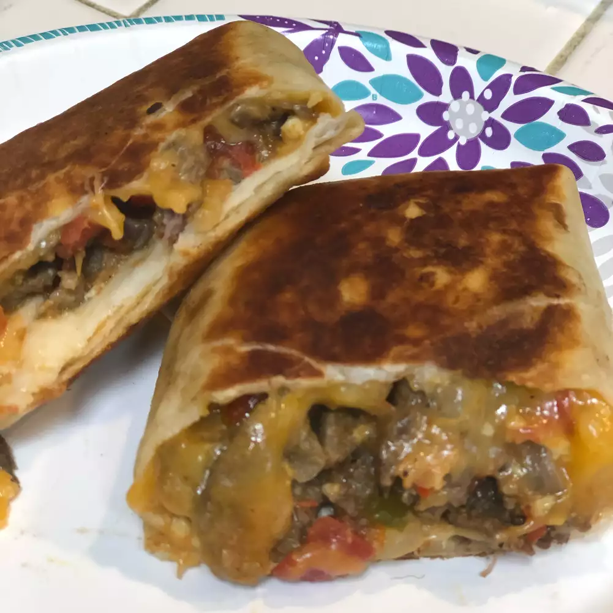

Carne Asada Breakfast Burrito

Description
A wonderful way to change up ordinary breakfast burrito by taking it to a new level.
Ingredients
- 2 pounds beef skirt steak, cut into thin strips
- 2 tablespoons carne asada seasoning
- 1 tablespoon garlic powder
- 1 tablespoon vegetable oil
- ½ sweet onion, diced
- 1 red bell pepper, seeded and chopped
- 1 jalapeno pepper, seeded and diced
- 1 (14.5 ounce) can Hunt's® Diced Tomatoes, drained
- 2 cups frozen diced potatoes
- salt and pepper to taste
- 3 tablespoons butter, divided
- 6 eggs, whisked
- 2 cups shredded Mexican cheese blend
- 4 (12 inch) flour tortillas